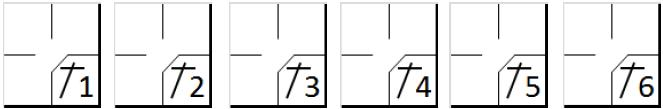
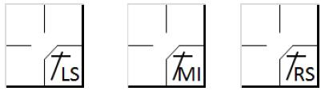
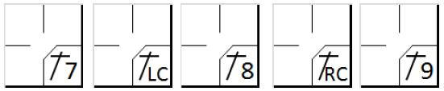
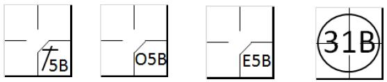

Safe hits
We shall begin this chapter by describing the symbols used to represent hits.
The sign for a base hit should be followed by a number identifying the zone of a fielder close to where the hit was recovered or came to rest, or by letters identifying the zone in the field.
We define base hits in different categories:
- where the ball is hit in the infield and stays there
- where the ball is hit in the infield and it ends just after the infield
- where the ball is hit in the outfield
- where the ball is hit in the outfield close to the foul line or between two outfielders
- when the ball was a bunt, but was not a sacrifice hit (bunt)
|
|
To give some examples of the different categories:
- where the ball is hit in the infield and stays in the infield

- where the ball is hit in the infield and it ends in the outfield (left side, middle, right side)

- where the ball is hit in the outfield

- where the ball is hit in the outfield down to the foul line
- when the ball was a bunt, but was not a sacrifice hit (bunt)

According to rule 9.05 of the OBR, the official scorer shall credit a batter with a base hit when:
the batter reaches first base (or any succeeding base) safely on a fair ball that settles on the ground, that touches a fence before being touched by a fielder, or that clears a fence [OBR 9.05(a)(1)].
NOTE: According to Rule 9.12(a )( 1) comment, it is not necessary for a fielder to touch the ball to be charged with an error. The scorer must therefore watch the hit very closely, as a ball that is not touched by a fielder may sometimes give rise to an error as well as a hit.
the batter reaches first base safely on a fair ball hit with such force, or so slowly, that any fielder attempting to make a play with the ball has no opportunity to do so [OBR 9.05(a)(2)].
Comment: The official scorer shall credit a hit if the fielder attempting to handle the ball cannot make a play, even if such fielder deflects the ball from or cuts off another fielder who could have put out a runner [OBR 9.05(a)(2) comment].
the batter reaches first base safely on a fair ball that takes an unnatural bounce so that a fielder cannot handle it with ordinary effort, or that touches the pitcher’s plate or any base (including home plate) before being touched by a fielder and bounces so that a fielder cannot handle the ball with ordinary effort [OBR 9.05(a)(3)].
the batter reaches first base safely on a fair ball that has not been touched by a fielder and that is in fair territory when the ball reaches the outfield, unless in the scorer’s judgment the ball could have been handled with ordinary effort [OBR 9.05(a)(4)].
NOTE: This rule has a practical application in cases where the hit is aimed at an infielder who may attempt to touch the ball. Close attention must therefore be paid to whether the ball could have been handled with ordinary effort by the infielder.
a fair ball that has not been touched by a fielder touches a runner or an umpire, unless a runner is called out for having been touched by an Infield Fly, in which case the official scorer shall not score a hit [OBR9.05(a)(5)] .
NOTE: In both cases, the ball is dead, and the hit must be awarded for the batter, even if this is the third out. If the ball touches the runner, he is called out. But if the ball touches the umpire, the runner(s) will advance one base in case they are forced to advance by the batter [OBR 5.06(b )( 3)(B)].If the runner is not forced, he will remain at his base.
a fielder unsuccessfully attempts to put out a preceding runner and in the official scorer’s judgment the batter-runner would not have been put out at first base by ordinary effort [OBR 9.05(a)(6)].
NOTE: If the scorer also deems that the batter-runner could have been put out, he must score a fielder’s choice. In any case, the scorer must observe the action closely in order to be able to score accurately either a base hit or a fielder’s choice, paying particular attention to the position of the batter-runner at the time the fielder threw the ball to another base.
In the descriptions of safe hits we have introduced a fundamental concept: Ordinary effort by a fielder. Ordinary effort is the effort that a fielder of average skill at a position in that league or classification of leagues should exhibit on a play, with due consideration given to the condition of the field and weather conditions. [OBR Definition of Terms –Ordinary Effort] This standard, called for several times in the Official Scoring Rules (e.g. Rules 9.05(a)(3), 9.05(a)(4), 9.05(a)(6), 9.05(b)(3)(Base Hits); 9.08(b)(Sacrifices); 9.12(a)(1) Comment, 9.12(d)(2) Errors; and9.13(a), 9.13(b)(Wild Pitches and Passed Balls)) and in the Official Baseball Rules (e.g. Definition of Terms - Infield Fly)), is an objective standard in regard to any particular fielder.
In other words, even if a fielder makes his best effort, if that effort falls short of what an average fielder at that position in that league would have made in a situation, the official scorer should charge that fielder with an error [ OBR Definition of Terms Comment]. We should say straight away that this is a very flexible concept that can vary from one scorer to another. We will therefore try to give guidelines based on the rules themselves and on experience.
A first recommendation is not to demand absolute perfection from the defense: in the case of a particularly difficult performance, award a hit rather than an error. The scorer will simply record the actions as occurred leaving it to the manager to judge the players for having reacted too late or having moved too slowly. It is also necessary to bear in mind that balls are often hit with great force, making them extremely difficult to handle.
One very important factor that can influence the scoring of hits is the defensive positions that the players assume before the hit. This determines the difficulty of the play. Clearly, a hit will be more difficult to catch if the players are closer, given the higher velocity of the ball. Before any action takes place, therefore, be aware of the positions of the fielders.
No error should be charged to a fielder who loses time feinting or turning to another base, even if, in the scorer’s judgment, a putout on first base would have been more possible and safer. Moreover, no article of the OBR provides for an error being charged against an outfielder if the ball bounces in front of him and over his head.
This is easy to understand, as he was unable to touch the ball in the first instance, not being close enough, and he could not catch it after it had bounced.
Moreover, there are some positions for which it is advisable to think twice before charging an error. Let us look at them:
The pitcher - When the hit is made, the pitcher is still completing his recovery movement after having delivered the ball, and is leaning forward, which means that a hit going over him would be very difficult to control, particularly if it had been hit hard. It therefore becomes difficult to make a play and the hit is therefore automatically considered a valid hit. Obviously, this is not the case if the hit is so slow as to enable the pitcher to return to a normal position in time to catch it. For the above reasons, the pitcher is also the only player exonerated from error if a fast ball passes between his legs.
The catcher - The catcher’s position is unlike that of the other fielders and this gives him a disadvantage in certain situations. A throw made to prevent a stolen base is not considered an error, provided that the runner does not subsequently advance. There may also be situations in which it is unclear whether to award a wild pitch or a passed ball; if in doubt, we suggest you give a wild pitch, bearing in mind how uncomfortable it is for the catcher to make certain movements.
The shortstop - He is the infielder with the greatest area to cover. This means he is obliged to deal with frequent difficult catches which, for that very reason, cannot be considered errors. For example, a sideways lunge for the ball, a catch at the edge of the red dirt, in front of third base or with his back to the diamond, must all be considered difficult.
The second baseman - In the event of a ground ball hit towards second base, which may be caught with ordinary effort, and which the fielder fails to catch, an error shall be charged in the absence of any obvious and relevant sideways motion by the fielder.
The third baseman - The zone in which the third baseman operates is where the majority of balls hit within the diamond end up, and where they are the fastest. Many of these balls are therefore difficult to control, given their speed, particularly if they bounce before entering the third base zone. Indeed, if they bounce, the balls may take an unnatural trajectory, increasing the difficulty of the catch. It is important to pay close attention to the speed of the ball in order to judge the difficulty of the catch. NOTE: Similar considerations apply to the first baseman when the batter is left-handed.
Outfielders - If a ball hit to the outfielders bounces in front of a fielder who has come forward to catch it on the fly and passes over his head, credit the batter with a two-base hit (or more), rather than a single, and an extra base error.
Another important concept that should be borne in mind in assessing the value of hits is that the official scorer shall always give the batter the benefit of the doubt . A safe course for the official scorer to follow is to score a hit when exceptionally good fielding of a ball fails to result in a putout [ OBR 9.05(a) Comment].
NO HIT IS awarded, according to rule 9.05(b) of the OBR when a
runner is forced out by a batted ball, or would have been forced out except for a fielding error [OBR 9.05(b)(1)].
It follows therefore that if there is also an error, no base hit should be awarded, with the possible exception of obstruction.
|
||||
|
|
|
|
|
|
|
|
|
/* Le premier frappeur gagne la première base sur 'Base on ball ' */ action { batter -> BB }
/* Le batteur frappe un hit et fait avancer le coureur. Le coureur ne touche pas sa base et la défense fait appel */ action { batter -> O1 , runner1 -> A14 }
|
|
|
pitcher , the catcher or any infielder handles a batted ball and puts out a preceding runner who is attempting to advance one base or to return to his original base, or would have put out such runner with ordinary effort except for a fielding error. The official scorer shall charge the batter with a time at bat but no hit [OBR 9.05(b )( 3)].
fielder fails in an attempt to put out a preceding runner, and in the scorer’s judgment, the batter-runner could have been put out at first base [OBR 9.05(b)(4)].
Comment : Rule 9.05(b) shall not apply if the fielder merely looks toward or feints toward another base before attempting to make the putout at first base .
Indeed, looking and feinting are an integral part of the game, and of the fielder’s actions; his delay in throwing is a requirement of the game and not a result of a catching error.
runner is called out for interference with a fielder attempting to field a batted ball, unless in the scorer’s judgment the batter-runner would have been safe had the interference not occurred [OBR 9.05(b)(5)].
| Example 2: In this case the scorer should pay careful attention to the position of the batter - runner at the time of the interference, in so far a sit may be possible to charge a base hit and a putout. In the event of a putout, it is an automatic putout for the runner who committed the interference and a fielder’s choice for the batter-runner. |
||||
|
|
|
|
|
|
|
|
|
/* Le premier frappeur gagne la première base sur 'Base on ball ' */ action { batter -> BB }
/* */ action { batter -> O4 , runner1 -> OBR13-4 }
|
|
|
|
|
|
/* Le premier frappeur gagne la première base sur 'Base on ball ' */ action { batter -> BB }
/* */ action { batter -> 1B5 , runner1 -> + OBR13-5 }
|
|
|
On the left, the runner interfered with the second baseman before reaching second base. On the right the runner went over second base to third base when he interfered with the third baseman.